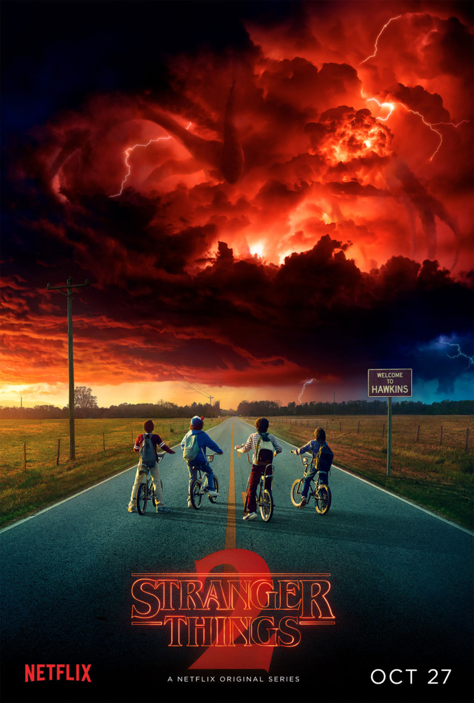
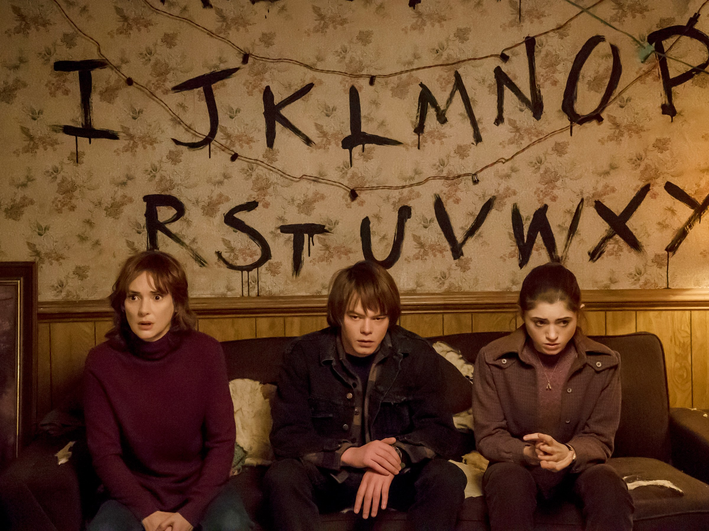
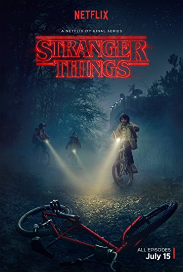

Stranger Things
Avg MangoMeter Avg Audience Score
About Series
A love letter to the '80s classics that captivated a generation, Stranger Things is set in 1983 Indiana, where a young boy vanishes into thin air. As friends, family and local police search for answers, they are drawn into an extraordinary mystery involving top-secret government experiments, terrifying supernatural forces and one very strange little girl.
Creators: Matt Duffer, Ross Duffer
Starring: Winona Ryder, David Harbour, Millie Bobby Brown
TV Network: Netflix
Premiere Date: Jul 15, 2016
Genre: Science Fiction & Fantasy
Executive Producers: Matt Duffer, Ross Duffer, Shawn Levy, Dan Cohen, Karl Gajdusek
Starring: Winona Ryder, David Harbour, Millie Bobby Brown
TV Network: Netflix
Premiere Date: Jul 15, 2016
Genre: Science Fiction & Fantasy
Executive Producers: Matt Duffer, Ross Duffer, Shawn Levy, Dan Cohen, Karl Gajdusek
Photos



Videos
Seasons
Stranger Things: Season 2
2017, Netflix, 9 episodes, 94% rating
Stranger Things' slow-building sophomore season balances moments of humor and a nostalgic sweetness against a growing horror that's all the more effective thanks to the show's full-bodied characters and evocative tone.
2017, Netflix, 9 episodes, 94% rating
Stranger Things' slow-building sophomore season balances moments of humor and a nostalgic sweetness against a growing horror that's all the more effective thanks to the show's full-bodied characters and evocative tone.

Stranger Things: Season 1
2016, Netflix, 8 episodes, 94% rating
Exciting, heartbreaking, and sometimes scary, Stranger Things acts as an addictive homage to Spielberg films and vintage 1980s television.
2016, Netflix, 8 episodes, 94% rating
Exciting, heartbreaking, and sometimes scary, Stranger Things acts as an addictive homage to Spielberg films and vintage 1980s television.